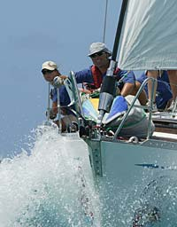

Jordomseiling.com
Frode Nygaard Knutsen og Marit Midtgård seilte rundt verden med S/Y Petrell, en HERO 101, fra Bergen i juli 2003 til sensommeren 2007. Her er alle reisebrevene fra turen.
Siste nytt
-
 16.09.2007Så er den store dagen her, vi skal offisielt komme hjem. Himmelens sluser står på vidt gap, radaren går og vi får snart øye på skolten. Masse folk har møtt fram, og vi skjønner det knapt. Vi har seilt rundt hele jorden og nå er vi…
16.09.2007Så er den store dagen her, vi skal offisielt komme hjem. Himmelens sluser står på vidt gap, radaren går og vi får snart øye på skolten. Masse folk har møtt fram, og vi skjønner det knapt. Vi har seilt rundt hele jorden og nå er vi… -
 08.08.2007Vi hadde en fantastisk mottakelse da vi kom inn til bryggen. Masse folk og himmelens sluser på vidt gap, ingen tvil om at vi var tilbake i Bergen. Vi verserte litt i media dagen derpå: NRK BT BA Nordhordaland Strilen Vi samler inn bilder fra hjemkomsten, og det vil også komme…
08.08.2007Vi hadde en fantastisk mottakelse da vi kom inn til bryggen. Masse folk og himmelens sluser på vidt gap, ingen tvil om at vi var tilbake i Bergen. Vi verserte litt i media dagen derpå: NRK BT BA Nordhordaland Strilen Vi samler inn bilder fra hjemkomsten, og det vil også komme… -
 02.07.2007Still crazy after all these years På heimveg I botnen på ein fjordarm Inne i ein svart prikk På kartet Ventar nokon på deg Båten din nærmar seg nå Og du må nok krøkja deg Endå litt meir saman For kvar dagen Skal du rekka Å bli liten…
02.07.2007Still crazy after all these years På heimveg I botnen på ein fjordarm Inne i ein svart prikk På kartet Ventar nokon på deg Båten din nærmar seg nå Og du må nok krøkja deg Endå litt meir saman For kvar dagen Skal du rekka Å bli liten… -

11.05.2007En regatta gjør seg etter så mye turseiling! Antigua Sailing Week er over, øyene tømmes, det er tid for hjemreise. Vi har hatt to artige uker på Antigua, med regatta og sosialt samkvem. Vi var mannskap på "Cisnecito", en 46 fots swan, og havna midt på treet… -
 18.04.2007Petrellen blir liten i dette selskapet... Grytidleg på morgonen vaknar eg av duvande reaggerytmar, musikken blir høgara og høgare, sola kikkar inn gjennom gluggen og Frode ruskar meg i håret. ”Welcome to the Caribbean, woman!”. Etter 3800 mil, 33 dagar, 15…
18.04.2007Petrellen blir liten i dette selskapet... Grytidleg på morgonen vaknar eg av duvande reaggerytmar, musikken blir høgara og høgare, sola kikkar inn gjennom gluggen og Frode ruskar meg i håret. ”Welcome to the Caribbean, woman!”. Etter 3800 mil, 33 dagar, 15… -
12.04.2007Nå ligger vi for anker i Clifton Havn på Union Island. 12g 35m N, 61g 24m W. Her har vi trådløst internett, så Nrk dundrer på anlegget nå og det er lenge siden sist. I dag skal vi ut på Tobago Cays og snorkle og kose oss, det er vel smekk fullt…
-
06.04.2007Igår kom vi til Pricklybay på Grenada. Hoppet over Tobago fordi påsken står for tur og med mange hellig dager blir det dyrt og vanskelig å sjekke ut og inn av de forskjellige landene. Ankeret var nesten ikke kommet på bunn før Henrietta og Conor fra…
-
30.03.2007544 mil igjen til Tobago. Tenkte jeg skulle skrive dette i ro og mak, men nei. Hadde ikke før overtatt etter Marit før det var en fiskebåt som skulle krysse kursen vår veldig nærmt. Så da var det opp med alle seil og håndstyre, en vet jo aldri hva de…